Made Possible
"Proudly Local"
Home décor, artwork and everyday objects — designed and printed right here, made from plant-based filament instead of petroleum plastic, with as little waste as we can manage.
Two things come first.
Everything else about Made Possible — the designs, the materials, the way we work — sits underneath these two.
Designed and printed right here
Everything Made Possible sells is designed and printed by Leanne, right here on the Waterside — and every design is inspired by home: the sea, the beach, the forest.
- Designed, printed and finished on the Waterside, New Forest — by one maker
- Every piece starts with this place: the Solent shoreline, the treeline, the shore
- Find us in person at local markets and craft fairs around the New Forest
Creating responsibly
Everything we print adds material to the world — so we take responsibility for every gram of it, from what it's made of to where the offcuts end up.
- Corn-based (PLA) filament — made from plants, not fossil fuels
- Prints designed to minimise purge waste before they're even started
- Offcuts and misprints are collected and remelted into moulds for other products
- Durable pieces made to be kept, not thrown away
Grounded
Honest, unpretentious, rooted in place.
Creative
Curious, inventive, always making.
Warm
Community-minded and approachable.
"To make genuinely useful things inspired by the place we call home — and to create responsibly every time we add something to the world."
Waterside roots and responsible making aren't add-ons to what we do. They're the reason Made Possible exists in the first place.
The loop
Every offcut has somewhere to go next. Here's the full journey, from field to finished piece — and back again.
Corn-based filament
Made from plants, not fossil fuels
Designed to cut waste
Purge and support minimised at the design stage
Printed & finished
Made on the Waterside, by hand
Offcuts collected
Nothing usable goes in the bin
Remelted into moulds
Reborn as a new, different product
and the loop starts again.
Being straight about our materials
PLA is a bioplastic made from corn starch rather than fossil fuels — but it's still a plastic, and we won't pretend otherwise. It only breaks down properly in industrial composting facilities, which most UK households can't access through kerbside collections, and it won't decompose in a home compost bin or garden.
That's exactly why we work the way we do: we choose a plant-based material over a petroleum one, design out waste before printing starts, remelt every offcut we can, and make durable pieces intended to be kept for years — not disposables. If a piece ever does reach the end of its life with you, we'd rather you return it to us than bin it, so it can go back into the loop.
Designs
A range of Leanne's own designs, ready to take home or find at a local market. Got something particular in mind? Leanne does consider commissions — get in touch.
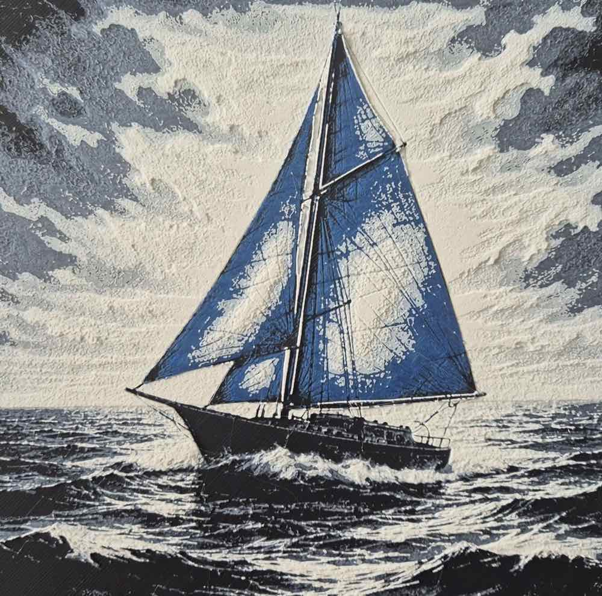
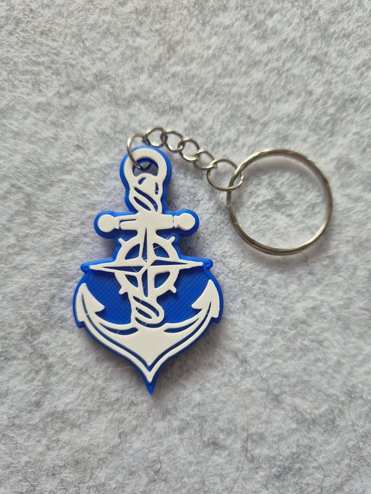
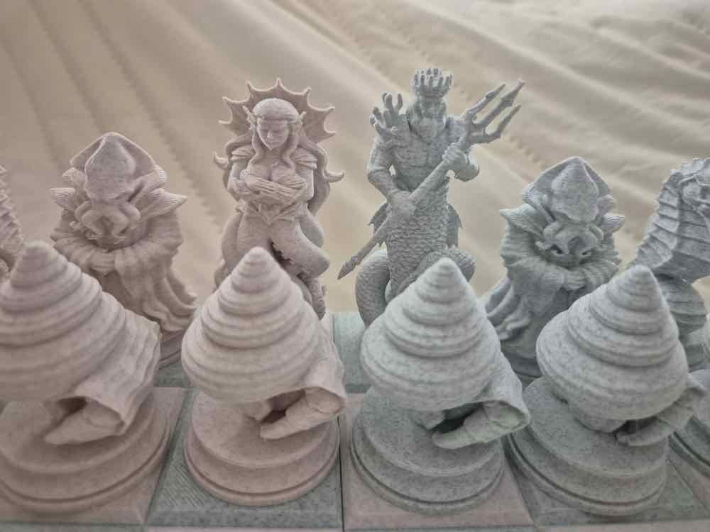
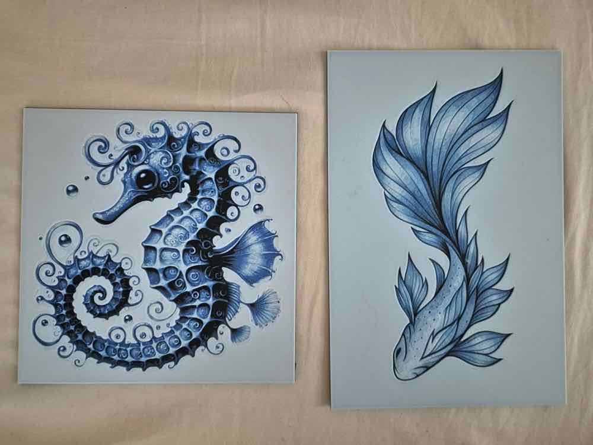
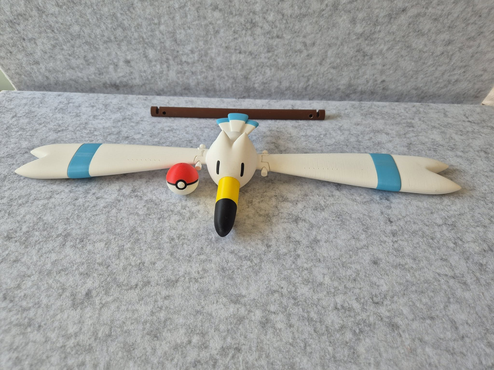
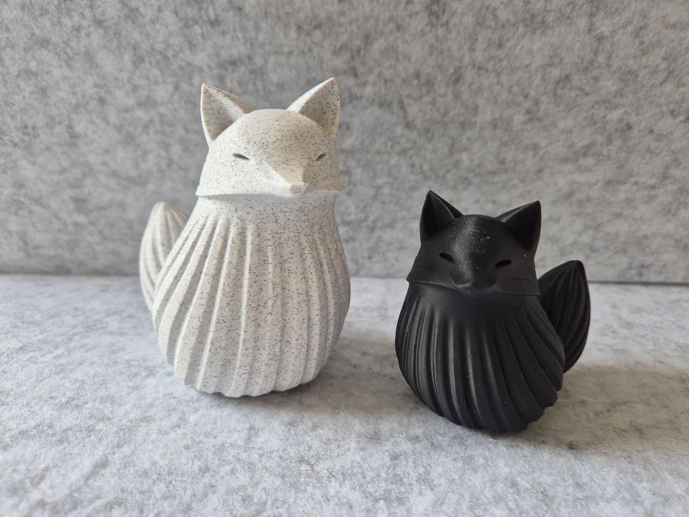
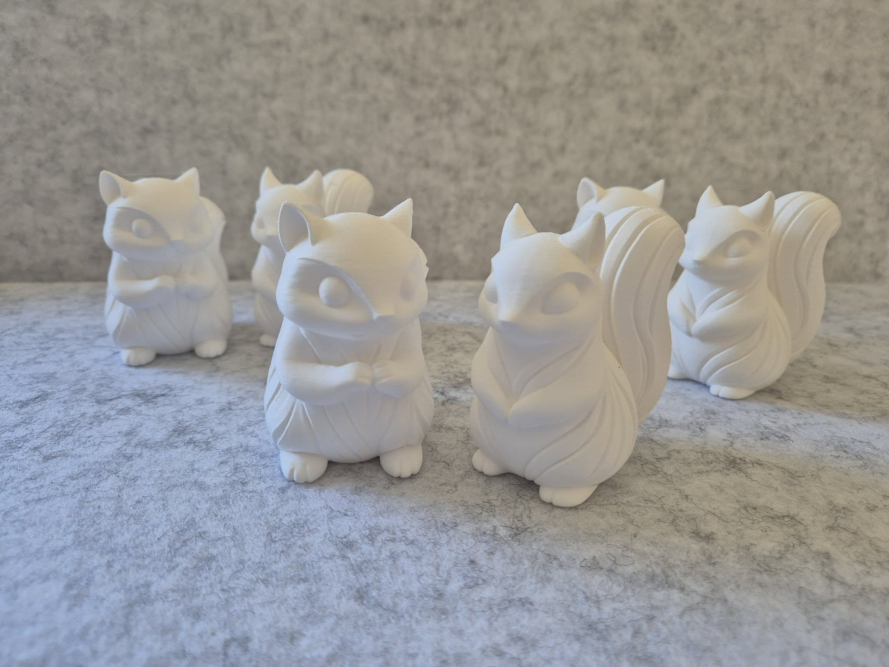
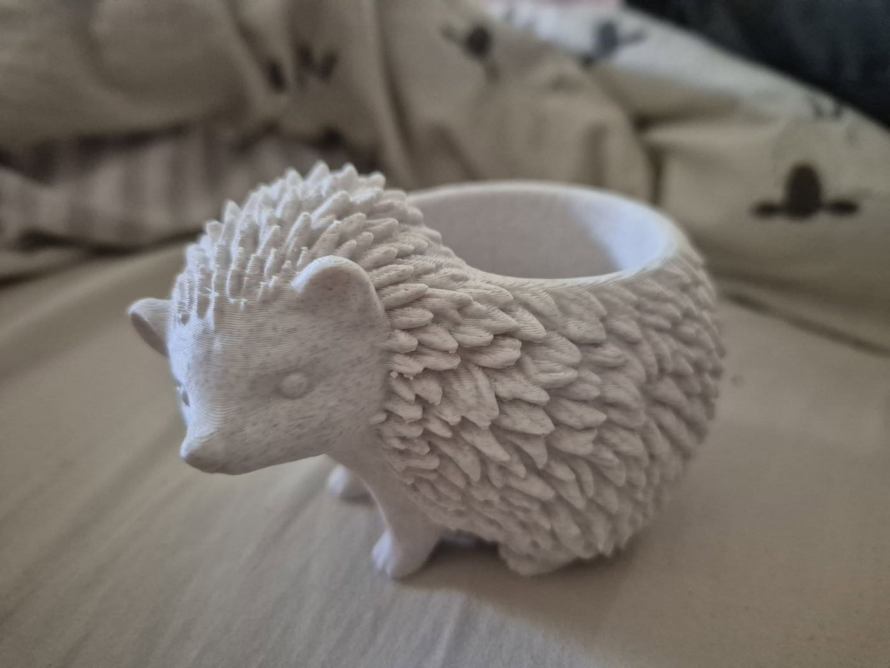
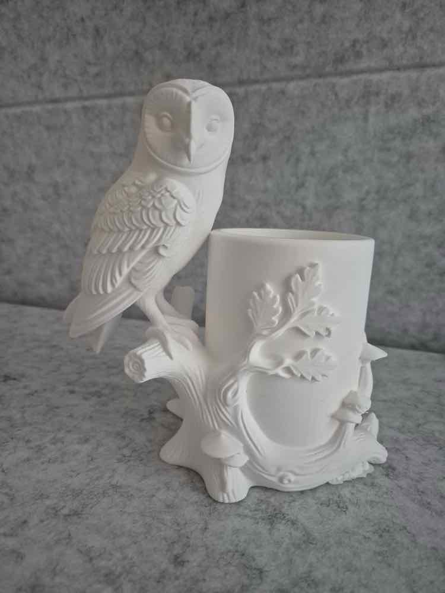
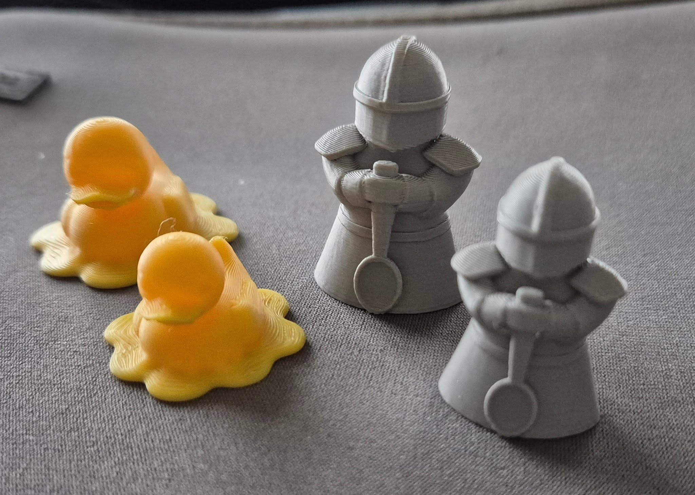
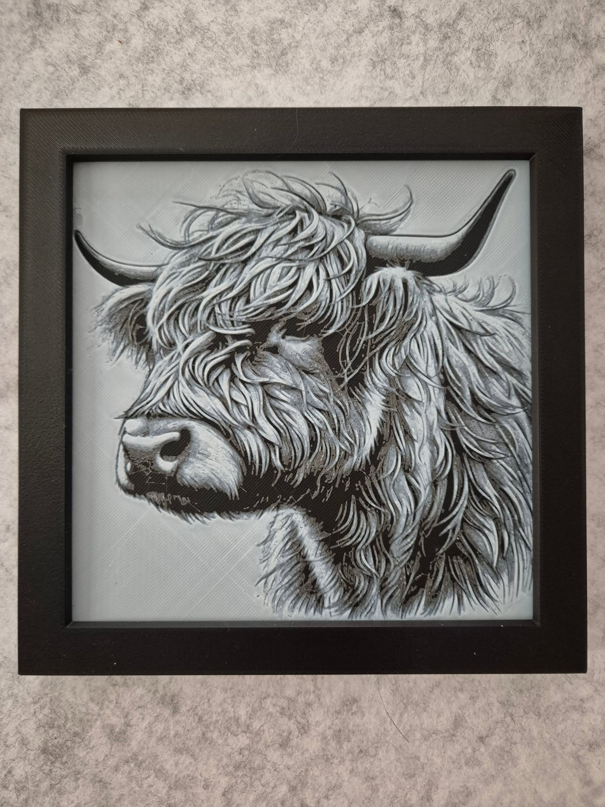
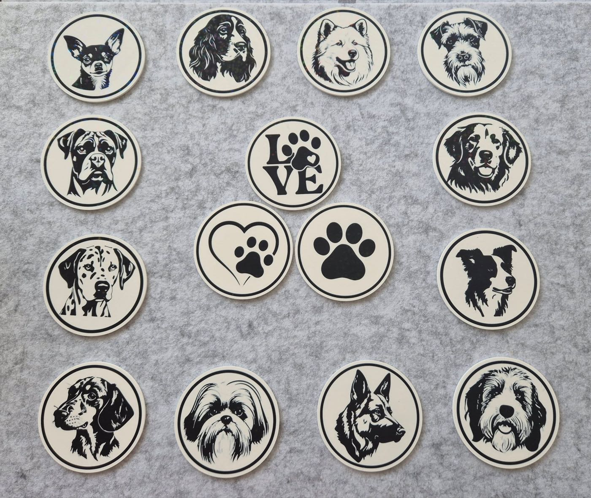
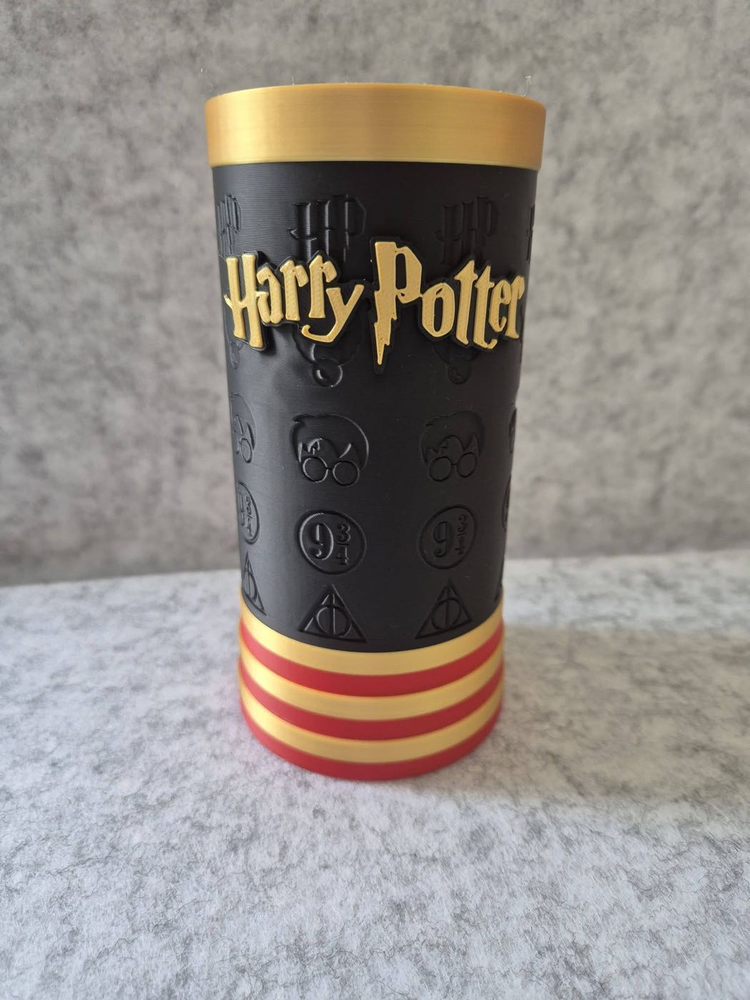
Swipe to browse →
About Leanne
Made Possible began after ill health brought Leanne's working life to an unexpected stop. Living with chronic illness and disability meant the working world she'd known no longer fit — and for a while, that left a real gap where a sense of purpose used to be.
3D printing turned out to be the right size for what she could give. It's creative without being punishing, hands-on without demanding more energy than some days allow, and flexible enough to work around good days and harder ones alike. What began as a way to stay creative on her own terms has grown into Made Possible — a small maker business built around the landscape she loves and materials she can feel genuinely good about using.
Say hello
Question about a piece, an idea for a commission, or want to know where to find us at the next market? Send a message below.
Find us in person
Made Possible pops up at local markets and craft fairs across the Waterside and New Forest — details posted here as dates are confirmed.